Optionen im Dialog "IFC Section Tool"
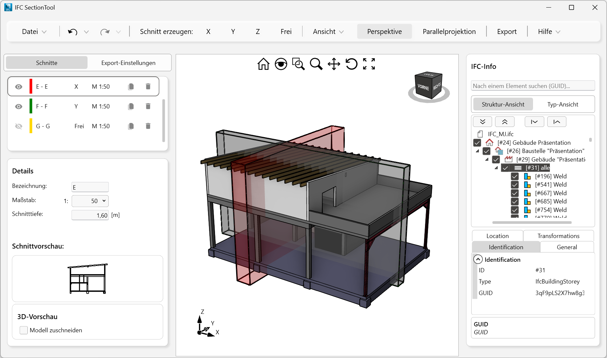 |
Modellbereich
Im Modellbereich betrachten Sie das Modell aus unterschiedlichen Perspektiven und sehen die erzeugten Schnitte. Der Modellbereich basiert auf dem kartesischen Koordinatensystem, wobei jeder Punkt durch drei Koordinaten festgelegt wird: die X-, Y- und Z-Koordinate.
Symbolleiste
In der Symbolleiste stehen verschiedene Funktionen zum Zoomen, Drehen und Verschieben zur Verfügung.
Siehe: Navigation im Modellbereich
Achsenkreuz
Der 3D-Raum im Modellbereich wird visuell durch das Achsenkreuz gekennzeichnet. Das Achsenkreuz besteht aus drei Linien, die senkrecht zueinander stehen. Diese Achsen sind hilfreich, um während der Arbeit im Modellbereich die Ausrichtung des Modells im 3D-Raum im Blick zu haben. Das Achsenkreuz passt sich jeder Ansichtsänderung an.
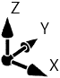 |
Wenn Sie beispielsweise die Frontansicht (Vorne) wählen, verläuft die X-Achse horizontal über den Bildschirm und die Z-Achse vertikal. Die Y-Achse zeigt in diesem Fall in den Bildschirm (nach hinten).
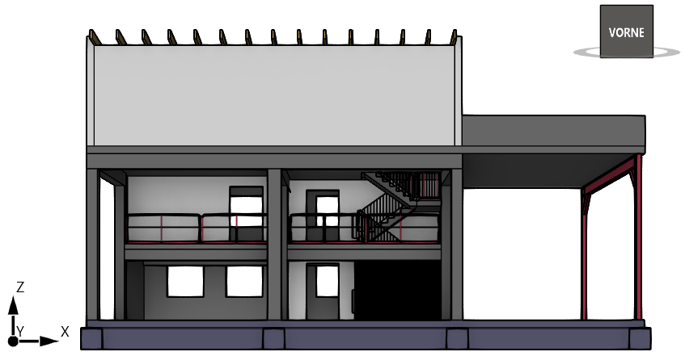 |
Ansichtswürfel
Der Ansichtswürfel ist ein Navigationswerkzeug, das angeklickt und gezogen werden kann. Während Sie im Modellbereich navigieren, gibt Ihnen der Würfel bei Ansichtsänderungen visuelles Feedback zum aktuellen Ansichtspunkt des Modells.
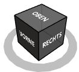 |
Standardansichten |
·Oben ·Unten ·Vorne ·Hinten ·Links und Rechts |
Standardansichten
Wenn Sie den Cursor auf dem Ansichtswürfel platzieren, wird es aktiviert. Klicken Sie eine Seitenfläche oder eine Kante an, um das Modell neu auszurichten.
Seitenfläche |
Kante |
Sie können auch eine Tastenkombination nutzen, um eine bestimmte orthogonale Ansicht einzustellen. Alternativ lässt sich die Ansicht auch über die Menüleiste unter [Ansicht → Standard-Ansichten] einstellen.
Ausrichten des Modells
Wenn Sie die linke Maustaste auf dem Ansichtswürfel gedrückt halten und die Maus bewegen, wird das Model gedreht und geneigt.
Um das Modell in der aktuellen Ansicht um einen festen Punkt zu drehen, klicken und ziehen Sie den Ring.
Datei
Klicken Sie auf den Pfeil  , um verfügbare Optionen anzuzeigen.
, um verfügbare Optionen anzuzeigen.
Öffnen
Öffnet eine IFC-Datei im Format (*.ifc) oder (*ifcZIP).
Siehe: IFC-Datei öffnen
Schnittdefinition Export
Exportiert eine Kopie aller unter Schnitte gelisteten Schnitte inklusive der Angaben unter Details in einer ifcschnitte-Datei (*.ifcschnitte).
Siehe: Schnittdefinition exportieren
Schnittdefinition Import
Importiert eine Schnittdefinition aus einer ifcschnitte-Datei. Wenn bereits Schnitte vorhanden sind, können Sie diese ersetzen, oder den Import abbrechen.
Siehe: Schnittdefinition importieren
Export
Übernimmt die sichtbaren Schnitte nach ISBCAD.
Siehe: Schnitt exportieren
Zuletzt verwendet
Zeigt die zehn zuletzt geöffneten IFC-Dateien an.
Einstellungen
Allgemeine Voreinsellungen im IFC Section Tool.
Siehe: IFC Section Tool Einstellungen
Beenden
Schließt das IFC Section Tool, wobei es weiterhin im Hintergrund ausgeführt wird. Mit [Datei | IFC-ST] kann es während der Zeichnungsbearbeitung erneut geöffnet werden.
Setzt schrittweise die vorher abgeschlossenen Aktionen zurück (beginnend mit der zuletzt abgeschlossenen Aktion). Wenn Sie mit dem Cursor über der Schaltfläche verharren, wird ein Hinweis mit der zuletzt abgeschlossenen Aktion angezeigt.
Mehrere Aktionen zurücksetzen
Wenn mehrere Aktionen in einem Schritt rückgängig gemacht werden sollen, klicken Sie auf das Dreieck-Symbol neben der Korrektur-Schaltfläche. Die letzten Aktionen werden bis zur Maximalanzahl in einem Auswahlfeld angezeigt. Die am weitesten zurückliegende Aktion befindet sich am unteren Ende.
Markieren Sie durch Überfahren mit dem Cursor, von oben nach unten, die letzten Aktionen in der Tabelle. Drücken Sie bei Erreichen der gewünschten Zeile die linke Maustaste. Alle Aktionen werden bis einschließlich der zuletzt markierten Aktion zurückgenommen (im Beispiel: Schnitt G - G verändert).
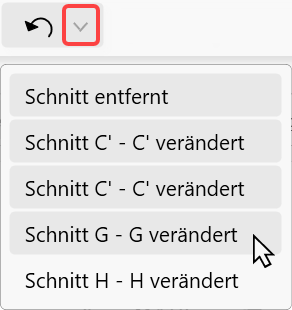 |
Stellt schrittweise die letzten Korrekturaktionen wieder her.
Mehrere Aktionen wiederherstellen
Wenn mehrere Korrekturen in einem Schritt rückgängig gemacht werden sollen, klicken Sie auf das Dreieck-Symbol neben der Korrektur-Schaltfläche. Die letzten Korrekturen werden in einem Auswahlfeld in umgekehrter Reihenfolge angezeigt.
Markieren Sie durch Überfahren mit dem Cursor, von oben nach unten, die letzten Korrekturen in der Tabelle. Drücken Sie bei Erreichen der gewünschten Zeile die linke Maustaste. Alle Korrekturen werden bis einschließlich der zuletzt markierten Korrektur zurückgenommen (im Beispiel: Schnitt entfernt).
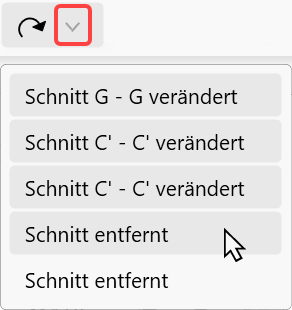 |
Schnitt erzeugen
Erzeugt einen Schnitt in X-, Y-, Z-Richtung oder einen freien Schnitt.
Siehe: Schnitt erzeugen und bearbeiten.
Klicken Sie auf den Pfeil  , um verfügbare Optionen anzuzeigen.
, um verfügbare Optionen anzuzeigen.
Zoom Alles
Das Modell wird im Modellbereich zentriert. Verwenden Sie diese Funktion, um Ihre Ansicht auf einen Abstand zu zoomen, in dem das gesamte Modell sichtbar ist. "Zoom Alles" wird häufig verwendet, wenn das Modell nicht mehr auf dem Bildschirm angezeigt wird oder Sie die Ansicht zurücksetzen möchten.
Standard-Ansichten
Voreingestellte Ansichten. Sie können das Modell aus verschiedenen Blickwinkeln betrachten, z. B. von oben, unten, links, rechts, hinten und vorne.
Siehe: Hotkeys für Standardansichten
Transparenz
Legt die Durchsichtigkeit des 3D-Modells fest. Stellen Sie einen höheren Transparenzwert ein, um z. B. Konturen hinter Wänden und Decken leichter zu erkennen.
Perspektive und Parallelprojektion
Das IFC Section Tool unterstützt zwei Modi zur Projektion von Ansichten - die perspektivische und parallele Projektion.
Perspektivisch projizierte Ansichten werden basierend auf der Entfernung von einer theoretischen Kamera und einem Zielpunkt berechnet. Je kürzer der Abstand zwischen Kamera und Zielpunkt ist, desto verzerrter tritt der perspektivische Effekt auf. Größere Entfernungen bewirken weniger verzerrte Effekte im Modell. In parallelen Projektionsansichten werden alle Punkte eines Modells angezeigt, die parallel zum Bildschirm projiziert werden.
Die Parallelprojektion kann die Arbeit mit dem Modell erleichtern, da alle Kanten des Modells unabhängig vom Abstand zur Kamera gleich groß angezeigt werden. In der realen Welt werden Objekte wiederum in perspektivischer Projektion gesehen.
Die folgenden Abbildungen zeigen dasselbe Modell aus derselben Blickrichtung, jedoch mit unterschiedlichen Projektionen:
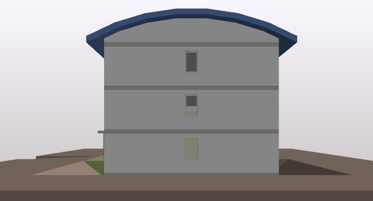 |
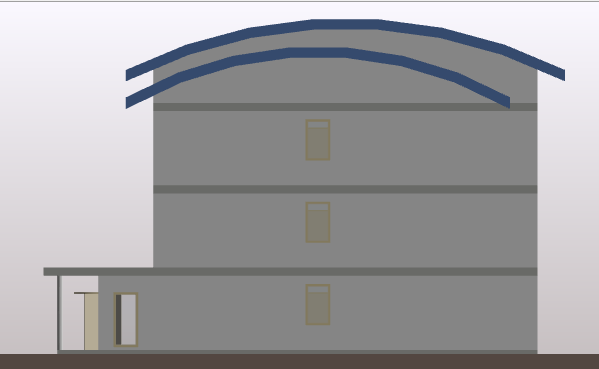 |
Perspektivische Projektion |
Parallelprojektion |
Export
Übernimmt die sichtbaren Schnitte nach ISBCAD.
Siehe: Schnitt exportieren
Hilfe
Klicken Sie auf den Pfeil  , um den Eintrag anzuzeigen.
, um den Eintrag anzuzeigen.
Handbuch öffnen
Ruft die ISBCAD Online-Hilfe auf (dieses Dokument).
Schnitte
Listet die erstellten Schnitte mit der zugehörigen Schnittpfeilbezeichnung auf.
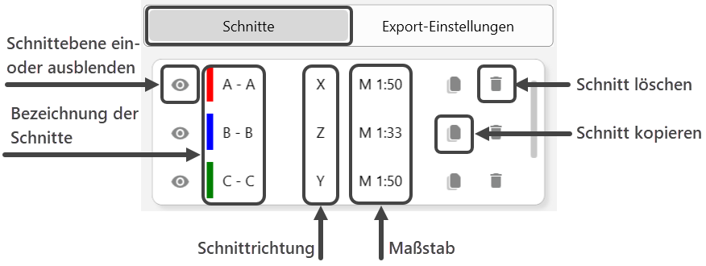 |
Siehe: Schnitt erzeugen und bearbeiten
Details
Nach dem Erstellen eines Schnitts können Sie die folgenden Parameter nachträglich anpassen:
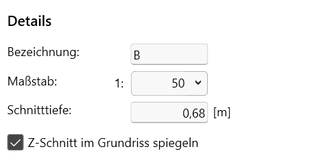 |
Die Angaben beziehen sich auf den unter Schnitte markierten Schnitt.
Bezeichnung
Geben Sie eine beliebige Zeichenfolge aus Buchstaben und Zahlen ein und bestätigen Sie mit der Tab-Taste. Der zweite Teil der Bezeichnung wird automatisch ergänzt.
Maßstab
Wählen Sie durch Klicken auf  einen Maßstab aus der Dropdown-Liste.
einen Maßstab aus der Dropdown-Liste.
Schnitttiefe [m]
Geben Sie die Schnitttiefe für die Schnittansicht an.
Ausrichtung [Parallel zu]
Nur bei freien Schnitten [F]. Klicken Sie diese Schaltfläche an und klicken Sie anschließend ein Bauteil im 3D-Modell an, zu dem der Schnitt parallel ausgerichtet werden soll.
Z-Schnitt im Grundriss spiegeln
Nur bei Horizontalschnitten [Z]. Mit dieser Option werden die Schnitte gespiegelt an ISBCAD übergeben. Damit der Schnitt in ISBCAD in der für den Ingenieurhochbau typischen Darstellungsart angezeigt wird, setzen Sie den Haken. Stellen Sie die Blickrichtung zudem von unten nach oben ein.
Schnittvorschau
Stellt den unter Schnitte oder im Modellbereich markierten Schnitt in einer 2D-Schnittvorschau dar.
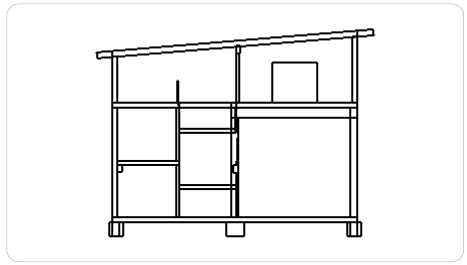 |
3D-Vorschau
Stellt den unter Schnitte oder im Modellbereich markierten Schnitt in einer 3D-Schnittvorschau dar. Die Schnittkanten am Anfang des Schnittes werden hervorgehoben.
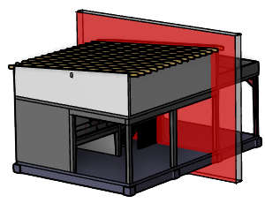 |
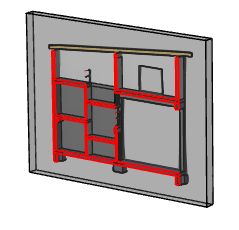 |
Markiert: Schnitt in X-Richtung |
Schnittvorschau |
Registerkarte "Export-Einstellungen"
Auf dieser Registerkarte können Sie angeben, wie die Kanten des Schnitts ausgegeben werden sollen. Zudem haben Sie die Möglichkeit, die Darstellung der Schnittpfeilbezeichnung und der Schnittpfeile zu definieren.
Siehe: Export-Einstellungen
Sie können zwischen zwei Filtereinstellungen wechseln, um die Anzeige der IFC-Objekte im Modellbereich anzupassen.
Siehe: IFC-Objekte ein- oder ausblenden
Zugehörige Referenzen: